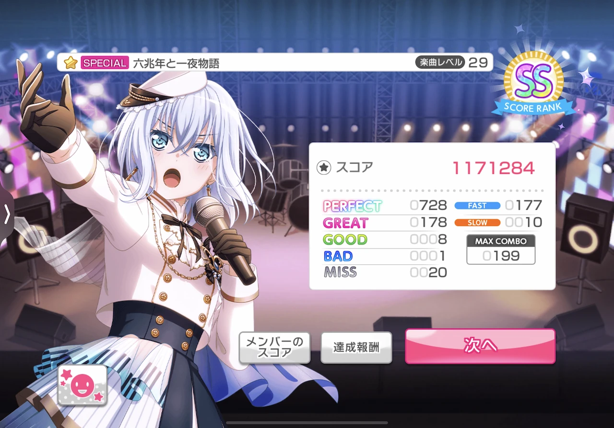

好きなアイドルを見つけ3Dモデルで動くMVを見ながら曲をプレイするゲーム
3DMVだけで無く2DMVもあるよ
デレステと概ね同じ感じだけど、こっちはストーリーも3Dで見れる
様々な有名な曲がカバーされているのが特徴のリズムゲーム
曲のノーツにパターンがあるのが特徴？

VOCALOIDの曲をプレイできるゲーム
オンゲキの曲もあるよ
見た目以上に難しいリズムゲーム。
ほとんどのキャラは中学生だヤッター（←ロリコン）